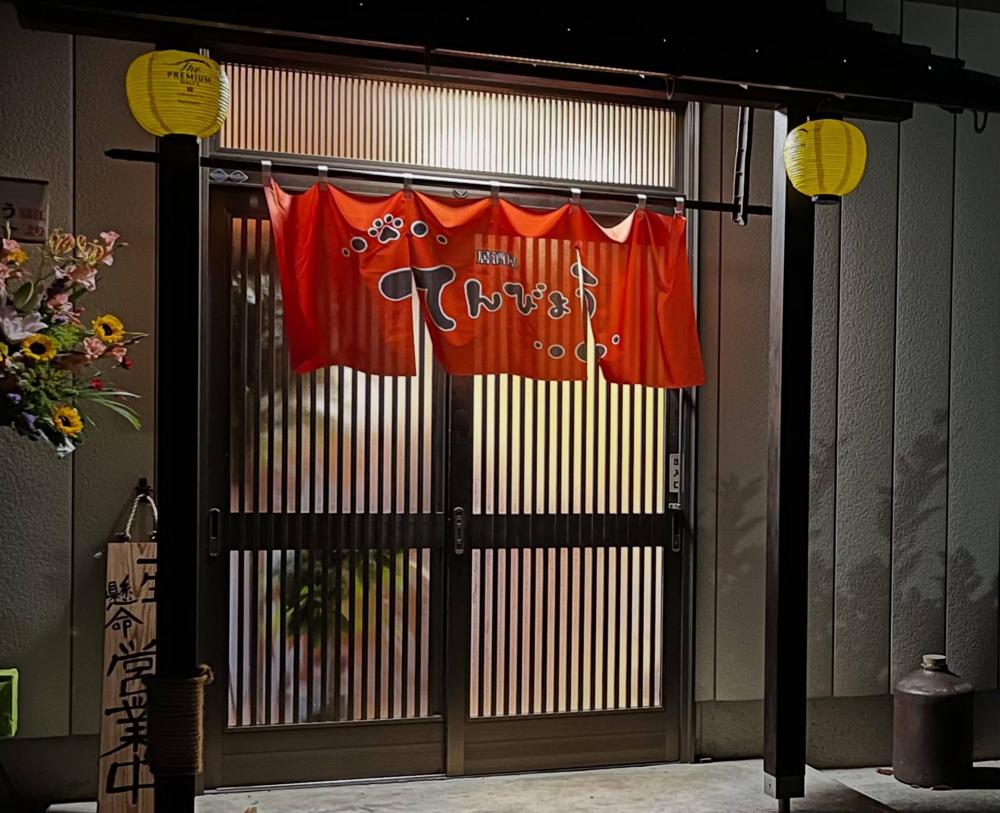
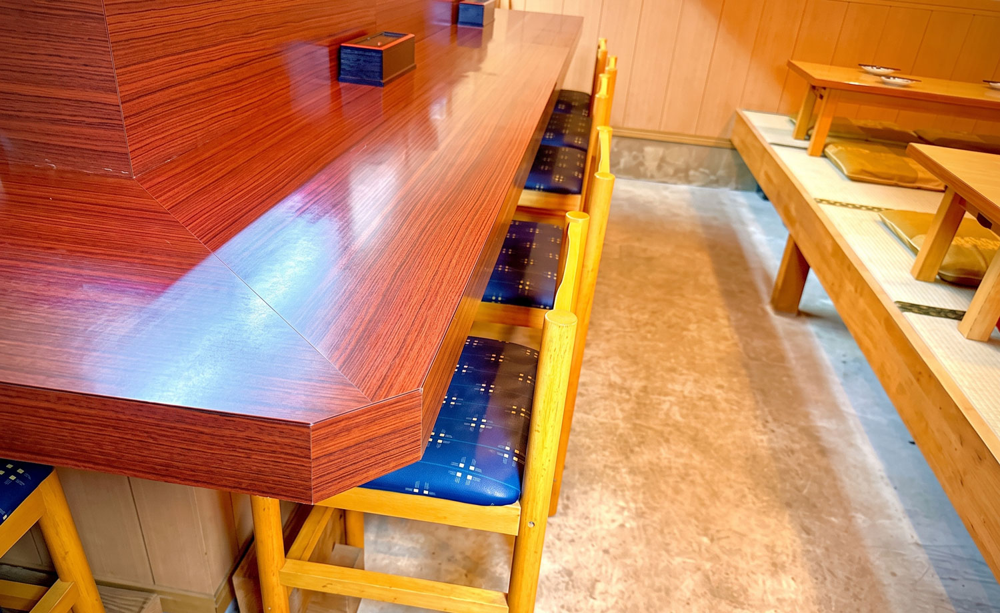
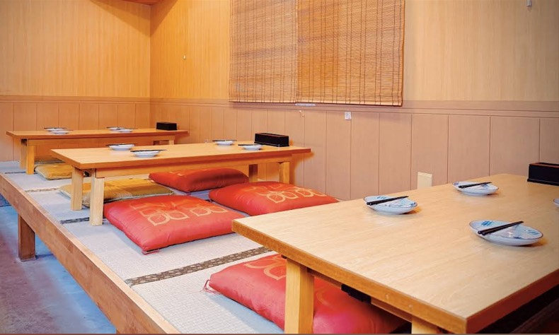

揚げたての串と、 ほっとできる時間を
ひとりでも、家族でも、仲間とでも。
小さなご縁が自然につながる、
吉見町の隠れ家居酒屋です。


ひとりでも、家族でも、仲間とでも。
小さなご縁が自然につながる、
吉見町の隠れ家居酒屋です。
こんな方におすすめ
- ✔仕事帰りに一人で気軽に飲みたい方
- ✔揚げたての串揚げを楽しみたい方
- ✔家族やお子様とゆっくり食事をしたい方
- ✔友人との食事やちょっとした宴会を楽しみたい方
- ✔初めてでも入りやすい居酒屋を探している方
- ✔落ち着いてお酒と料理を楽しみたい方
ご縁が集まる、
吉見町の小さな居酒屋
埼玉県比企郡吉見町にある「居酒屋
てんびょう」は、
揚げたての串揚げとお酒を気軽に楽しめる、
夫婦で営むアットホームな居酒屋です。
一本一本丁寧に仕込む串揚げを中心に、
お酒によく合う一品料理や季節のメニューを
ご用意しています。
店内にはカウンターとお座敷があり、
おひとり様のちょい飲みから、お子様連れのご家族、
ご友人との食事や宴会まで幅広くご利用いただけます。
常連の方も初めての方も自然と馴染める、
ほっと肩の力を抜いて過ごせる場所を目指しています。

4つの特徴
一本ずつ丁寧に仕込む、揚げたて串揚げ
素材のおいしさを楽しんでいただけるよう、一つひとつ丁寧に仕込み、揚げたてでご提供。
定番はもちろん、旬の食材を使った串や季節の味もお楽しみいただけます。

おひとり様も気軽なカウンター席
仕事帰りの一杯や、ちょっと飲んで帰りたい日にも気軽に立ち寄れるカウンターをご用意。
おひとり様でも肩肘張らず、ゆっくりお過ごしいただけます。

家族でくつろげるお座敷
靴を脱いでゆったり過ごせるお座敷もご用意しています。
お子様連れのご家族やご友人とのお食事、グループでのお集まりにもおすすめです。

夫婦で迎える、温かな雰囲気
夫婦で営む小さなお店だからこそ、一人ひとりとのご縁を大切に。
常連の方も初めての方も自然と会話が生まれ、またふらっと立ち寄りたくなるような居心地の良さを大切にしています。
小さなご縁を、
大切に
以前から「いつか自分たちのお店を持ちたい」という
想いがありました。
おいしい料理とお酒を囲みながら、誰もが気軽に集まり、
ほっとできる時間を過ごせる場所をつくりたい。
そんな想いから「居酒屋
てんびょう」を始めました。
一人で静かに飲みたい日も、家族で食事を楽しみたい日も、
仲間と笑い合いたい夜も。
ここで生まれる一つひとつのご縁を大切に、地域の皆さまに
「また来たい」と思っていただけるお店を
夫婦でつくっていきたいと思っています。